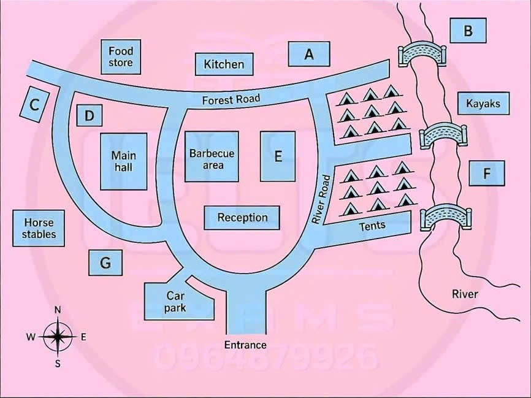

Phiếu trả lời Listening
Bấm số câu để nhảy tới câu đó. Bài làm được tự lưu trên máy này. Thời gian thi thật: khoảng 30 phút.
PART 1 Questions 1–10
Complete the notes below.
Write NO MORE THAN TWO WORDS AND/OR A NUMBER for each answer.
| Call Record Card | |
|---|---|
| Example: Caller’s phone number: | 03786 439251 |
| Caller’s name: | Robert |
| Address: | 27 , Moortown |
| Postcode: | DP17 5HJ |
| Date of birth: | , 1975 |
| Doctor’s name: | Dr Craven |
| Doctor’s address: | Moortown Health Centre |
| Reason for call: | Pain in his back |
| Previous history: | Similar back problem in June last year |
| Details of present problem: | Started ago |
| Got worse this | |
| No abdominal pain | |
| Possible cause: | Lifting up a heavy |
| Treatment already applied: | Has applied heat |
| Has taken | |
| Advice given: | Try using |
| Go to doctor tomorrow | |
| Ask for information about |
📜 Lời thoại Part 1
You will see that there is an example that has been done for you. On this occasion only, the conversation relating to this will be played first. Hello, this is Medical Help Direct.
How can I help you? Oh, hello. I've got a problem with my back, and with it being the middle of the night, I can't go to the doctor, and I wondered if you could give me some advice. Certainly.
But first, can I have your telephone number, please? It's 03786 439 251. The man's telephone number is 03786 439 251. So, 03786 439 251 has been written in the space.
Now we shall begin. You should answer the questions as you listen, because you are recording a second time. Listen carefully, and answer questions one by one.
Hello, I've got a problem with my back, and with it being the middle of the night, I can't go to the doctor, and I wonder if you can give me some advice. Certainly. But first, can I have your telephone number, please? It's 03786 439 251.
OK. And if you could give me your first name, please? Robert. And your surname? Ridyard.
That's R-I-D-Y-A-R-D. And now your address, please? It's 27 Station Road. OK.
Moortown. And do you need the postcode? Yes, please. D-P-17-5-H-J.
And your date of birth? The 25th of February, 1975. Fine. Now I just need to take details of your doctor.
She's called Dr Craven. And the surgery? It's Moortown Health Centre. Thanks.
Now, can you tell me a bit more about what the problem is? Well, like I said, it's my back. OK. Can you tell me which part of the back? Lower.
And have you had any problems with your back before? Yes. I had a bit of trouble last year, in June, I think. Or was it July? No, we went on holiday at the beginning of July, and it had cleared up by then.
And when did it start this time? Has it just come on? No, I've had it, let's see, since Monday, so that's three days now. But it wasn't too bad at first. I mean, I could just about get around, though.
I couldn't drive the car or anything. Then this afternoon, the pain suddenly got so bad that I went to bed. I've been in bed since, but that hasn't helped.
And do you have any pain elsewhere? In your stomach or abdomen, for example? No. Before you hear the rest of the conversation, you have some time to look at questions 7 to 10 on page 2. Now listen and answer questions 7 to 10.
OK.
Now, have you any idea what caused the problem? Well, I was tidying up my office, and I lifted a box up from the floor that was heavier than I thought, and I think that's what did it. Yes, it's easily done, isn't it? So you're in bed now? Yes.
Have you tried applying heat to the back? Yes, I've got a hot water bottle.
That's usually the first thing I try. And have you taken any painkillers? Yes. And other than that, you feel quite well? I do, yes.
Right. Now, I can't diagnose or prescribe any medication, but I can offer you some advice. One thing you could do now is to see if ice makes any difference.
That sometimes helps. But don't put it directly onto your skin. Wrap it up in a towel or something.
And don't leave it on for longer than 20 minutes. Oh, right. I haven't tried that before.
It can be useful sometimes. Now, have you seen your doctor about this? No, I just thought, well, everyone has back pain, but I've never had it as bad as this before. I think you should go and see your doctor tomorrow, and she may be able to give you something to help.
OK, I'll do that. I'm actually feeling a bit better now. Good.
And you might get some advice from her about exercise. That's often the best way of dealing with this sort of problem. OK, I'll ask her.
Right. Now, if you're worried about anything before tomorrow, you can always phone back. Our lines are open 24 hours.
Thanks very much. That is the end of Section 1. You now have half a minute to check your answers.
PART 2 Questions 11–20
Questions 11–16
Choose the correct letter, A, B or C.
Preparing for a trip to an outdoor education center
11 A trip to the outdoor education center will help the children
12 To prepare their children for the trip, parents should
13 What do parents need to put in their children's backpack?
14 What are children allowed to bring on the trip?
15 How are parents selected to attend the trip?
16 Payment for the trip
Questions 17–20
Label the map below.
Write the correct letter, A–G, next to Questions 17–20.

17 Woodcarving studio
18 Emergency meeting point
19 Conservation center
20 Arts and crafts room
📜 Lời thoại Part 2
Now turn to Section 2 on page 3. Part 2. You will hear a principal of a school talking to a group of parents about a three-day trip for pupils to an outdoor education centre.
First, you have some time to look at questions 11 to 16. Now listen carefully and answer questions 11 to 16. Good evening.
It's good to see so many parents here. Let me begin by explaining why we go to the outdoor education centre. Well, by age 10, we feel the children are ready for a trip away from home but still in a safe environment and under the guidance of a familiar adult.
At the school, we strongly believe children should be encouraged to try different things and not give up when it gets difficult. And that's what the centre is all about, having a go. Anyway, to start with, the sleeping arrangements.
For some children, this will be their first time in a tent and away from home, so please prepare them. You can do this just by making sure they have some early nights before we go. Another thing, there's space for three children per tent so we can't guarantee your child will be in with their best friends.
So do make them aware of this. Now, you should have received a list with the clothing the children will need in their backpack. But there are some extras.
Please provide a packet of biscuits or maybe fruit bars. But these need to go in the box in the school hall, not with the children. Actually, what we do need in the backpacks are bags for cleaning up and for wet clothing, so plastic ones please.
A torch is a good idea, but don't worry about putting money in because there's nothing to buy. While we're on the subject, let's talk about some other items. Cell phones are permitted, but they must be switched off at night and also off during the teaching sessions.
Also, for wood carving activities, knives will be provided by the centre so children shouldn't bring them from home. Electronic games are banned, so rather than bring one of these children should bring quiet board games. Turning to the question of parent attendance, in the past we've had too many volunteers so we have written names on bits of paper and pulled them out of the box.
But then some parents have changed their minds. So, if you're absolutely sure you can come, put your name down on the sign-up form and the first ten will be asked to come. Experience isn't required, we just want you to lend a hand.
Now, I'm afraid the fee for the trip needs to be paid by the 15th. Payment to the centre is made by school, not by parents. And your teacher will be given your child a form with the school's bank account details if you want to use them to make payments.
Otherwise, please leave payment in an envelope in the box at the school office. Before you hear the rest of the talk, you have some time to look at questions 17 to 20. Now listen and answer questions 17 to 20.
Right. Let's have a look the centre. I hope you all have leaflet with a map on the back and we'd like you to show this to your children before they go.
Now, if you look at the map, you will see the entrance at the bottom. OK, so just through the entrance you'll see Reception. Now the wood-carving studio. So you see where the main hall is located.
Well, to the right of the hall and opposite the kitchen is the new barbecue area and it's right next to that overlooking Forts Road. It's crucial that children know where the emergency meeting point is. If you look to the top of the map and to north of Forest Road, that's the location.
It is on the same side of river as the tents. There's a lot going on at the river, for example, the Conservation Centre. See the building marked Kayaks on right side riverbank? Well, the Conservation Centre is between the two bridges just below it.
I should also mention that if your child is not a confident swimmer, there are life jackets hanging all along the riverbank. If your children likes drawing and painting, the Arts and Crafts room is to the right of the river, a little further up from the kayaks. OK, so are there any questions so far? That is the end of Part 2. You now have half a minute to check your answers.
PART 3 Questions 21–30
Questions 21–24
Choose the correct letter, A, B or C.
Stone Point: A New Zealand historical site
21 According to Liz, Stone Point played a key role in local history because
22 Scott and Liz agree Maori originally chose to inhabit Stone Point because of
23 Scott and Liz agree that using Maori terminology in their presentation
24 When Scott mentions the engines at Stone Point, Liz advises him to
Questions 25–30
What do Liz and Scott agree they must do for each of the following sections for their presentation on Stone Point?
Write the correct letter, A–H, next to Questions 25–30.
Sections of Presentation
Early Maori inhibition of Stone Point
The use of Stone Point as a lookout point
The reconstruction of the fort
Modernisation of the fort in the 1930s-40s
Uses of Stone Point from 1950s to the present day
The use of Stone Point as public park
Things to do
A provide further description
B find images
C set up an interview
D check author’s details
E check the exact location
F obtain official permission
G be more objective
H reduce it in length
📜 Lời thoại Part 3
Hi Scott, here are my notes. Let's sort this presentation out then. The first thing I found out about Stone Point is it's an extinct volcanic cone.
You probably know that already, being a New Zealander. Yes, and there are two other cones nearby, which also overlook the harbour. Right.
Yeah, the first settlers of New Zealand, the Maori, sailed to New Zealand thousands of years after these volcanoes erupted. I think the tutor allocated us this topic, though, because of Stone Point's significant historical role. It's been used by both Maori and European settlers as a place to shelter from attack or launch an attack, for centuries.\ \ Yeah, and the fact it was an ideal place for building a village, it would have been quite a sheltered spot. I suppose the Maori settled there because they thought the volcanic soil would help their crops grow. Well, they would have realised the benefits of the soil after a few good harvests, but initially the fishing opportunities would have been the attraction.
You're right. Actually, I also read that Maori regard Stone Point as taonga. I believe that means a treasured thing.
Wow, your Maori vocabulary is improving, Scotch. We do have to deal with Stone Point's cultural value for Maori. That's still part of its historical significance, but we need to keep most Maori terminology out of the presentation, otherwise a lot of the international students won't be able to follow us.
That's a shame. I'm sure they'd be interested. I mean, I am.
But, yeah, we wouldn't be able to explain it in the time allowed, so I guess we have to stick to English. Anyway, European migrants turned Stone Point into a lookout point for ships. Then it became a fort, an army base in the late 1880s, and then during the World Wars the fort was modernised again.
It's also been a public park sometimes. I'd prefer to devote more of the presentation to the military use of Stone Point. There are some great websites about the engines they installed.
Sorry, I wouldn't go into the technical side if I were you. If you start describing mechanical stuff, people will switch off. I think it's more interesting to look at the impact Stone Point had on the people's lives at the time.
I mean, for example, there were about 25 years when they used local prisoners to build the tunnels and the underground rooms. They lived there too. Yeah, I guess, if we can find some first-hand accounts.
Before you hear the rest of the discussion, you have some time to look at questions 25 to 30 on page 6. Now listen and answer questions 25 to 30. OK, so let's make a checklist of things to do. For the Early Maori Inhabitation section, we have to look at the material we've used again and make sure we know who the writers were and when they wrote it.
Yes, that needs work. And for the part about Stone Point being used as a lookout point, I'm sure we can locate some drawings of how Stone Point looked then and the kind of ships coming in. Nice.
And what else? We haven't got a lot of detail for the reconstruction of the fort. We should add some more information about what it was the prisoners were adding to it. OK, I'll do that bit too.
So I'll deal with the section regarding the modernisation that happened in the 1930s and 40s. I mean, that's the bit where we have the most visible evidence of historic buildings. I'll ring the Department of Conservation and see if they'll agree to let me film the site.
Maybe allow me access to some of the tunnels the public don't see. OK. For the 1950s onwards, could you also arrange a meeting with someone from the Department of Conservation to ask them about their restoration work? I could try.
Oh, and just about its use as a public park today. Where is the boundary exactly? Does it go all the way to the beach? Not sure. I'll check that out.\ \ Great.
I suppose it would finish off the presentation nicely if we explain the future plans for the site. That is the end of section 3. You now have half a minute to check your answers.
PART 4 Questions 31–40
Complete the notes below.
Write NO MORE THAN TWO WORDS for each answer.
Rural Development
The Berbers
lived in various countries in North Africa
were driven from their homes during the 12th century
began to lead a nomadic life, moving across and mountains
Different Berber Lifestyles
some Berbers, known as nomads, moved twice a year
some Berbers were completely nomadic
some Berbers settled by oases, producing fruit, vegetables, and to cook with
people and belongings were carried by
settled Berbers lived in houses
nomadic Berbers used tents
settled communities organised themselves by holding regular meetings in the of the village
The Tuaregs
if goatskins were unavailable, tents were made from or palm-leaf mats
Tuareg labourers were the descendants of
adult men always wore a veil
some Tuaregs moved to Burkina Faso with their
Tuaregs and Timbuktu
Timbuktu was settled by Tuaregs around 1000 years ago
the city built wealth on the salt and gold trades
some Tuaregs now work as for the Mallian Department of Tourism
📜 Lời thoại Part 4
Now turn to section 4 on page 7. Section 4. You will hear part of a lecture on rural development. First, you have some time to look at questions 31 to 40 on page 7. Now listen carefully and answer questions 31 to 40.
Good morning, everyone.
Now, you'll remember that last week we looked at the migration of people from the interior of West Africa to various coastal towns with special reference to Ghana. Today we're going to focus on the people known as the Berbers who live in North Africa. The Berbers inhabited this part of Africa as long ago as the 7th century and their society was based on tribes which were scattered throughout a number of countries Algeria, Morocco, Libya and Mali.
However, at some point in the 12th century, the area was invaded by Bedouin Arabs. These people destroyed the Berbers' peasant economy. As a result, many Berbers left their settlements to lead a nomadic life by wandering with their animals through the deserts and across the different mountains.
Over the centuries, many Berbers migrated to other countries like Spain and France to work as labourers, taking with them their culture and traditions and their descendants remain there until this day. Not all the Berbers led a fully nomadic life. There were three different groups.
Some became farmers cultivating the lowlands in the winter and grazing their flocks of animals in the mountains during the summer. They are called seasonal nomads. Some Berbers who led a completely nomadic life tended to move from one oasis to another.
A third group settled by the oases and grew fruit and vegetables like dates and eggplants as well as making olive oil which they used for cooking. Traditionally, Berbers kept cattle, sheep and goats together with oxen, mules and horses. In the Sahel region of North Africa, that's the area south of the Sahara desert, the region became and still is becoming increasingly dry and arid.
So the Berbers relied more and more on camels for transporting their families and their goods. How did these different groups of people survive in such harsh conditions? Where did they live? Well, Berbers who stayed put in one place built single-storey stone houses for protection by quarrying the local rock. Whereas nomadic Berbers carried their homes with them and erected temporary tents, settled Berbers developed various small-scale industries such as pottery making and weaving, but these tasks were generally left to the Berber women.
As you might expect though, the life of a settled community was governed by the men who met regularly in the village square to discuss affairs and make decisions. Now let's turn to the Tuaregs who belonged to a nomadic Berber group and moved mainly in the central and western Sahara desert, north of the river Niger. The word Tuareg comes from the Arabic Tawareq and means God-forsaken.
Desert Tuareg carried tents made of strips of goatskins sewn together. As many as 40 skins were needed to make a complete tent. If the skins weren't available, they wove mats made of grass or palm leaves and hung them over a frame so that the tent looked like a humped dome.
Tuareg society was traditionally very feudal and organised as a strict hierarchy ranging from nobles or aristocrats downwards to labourers whose ancestors had once been slaves. Tuaregs were famous for their warlike qualities and fierce independence. In fact, one of the greatest insults was to suggest to a Tuareg that his father had died in his bed and not while fighting.
Tuareg men were sometimes called blue men as all adult males wore a dark blue veil in the presence of women, strangers and in-laws. Legend had it that a Tuareg man couldn't be recognised unless he was wearing this veil. But this custom of the veil began to disappear as more and more Tuaregs became urbanised and moved to the towns.
I mentioned earlier how dry the Sahel region has become and there have been very severe droughts over the past 30 years. This has meant that the number of Tuaregs living in the area has declined. Those whose animals were fortunate enough to survive have moved away from the southern Sahara into Burkina Faso in order to find new grazing lands for their herds.
If there's one city which people associate with the Sahara desert it's probably Timbuktu. But what most people don't know is that Timbuktu was founded by Tuareg nomads almost a thousand years ago. The city became the focal point of the trans-Saharan caravan routes.
North African merchants flocked there to do business and trading in gold and salt flourished. For many years, Timbuktu was considered inaccessible. But today what is left of the city attracts a small number of tourists.
The tourism department of the Mali government employs some Tuaregs who act as guides. Essential, really, when you realise that it's only the Tuaregs who can find their way around the desert using the sand dunes as landmarks. Right, I'll take questions now before I go on to discuss Tamasheq, the language spoken by the Tuaregs, which also has an alphabet called... That is the end of section four.
You now have half a minute to check your answers. That is the end of the listening test. You now have ten minutes to transfer your answers to the listening answer sheet.
Phiếu trả lời Reading
Bấm số câu để nhảy tới câu đó. Bài làm được tự lưu trên máy này. Thời gian thi thật: 60 phút.
READING PASSAGE 1 Questions 1–13
You should spend about 20 minutes on Questions 1–13, which are based on Reading Passage 1.
Australia's Airborne Dentists
Australians living or traveling in rural and remote areas can face particular difficulties when they need medical care. Hundreds of kilometres from major cities and many hours by road from the closest hospital or clinic, some rural Australians do not have easy access to doctors, nurses and dentists.
Organisations such as the Royal Flying Doctor Service (RFDS) have been established to bring health services to outback Australian communities. The RFDS provides free medical care to people who live, work or travel in remote and regional parts of Australia. This non-profit organisation is the oldest and largest airborne health service of its kind in the world, and since 1928 it has used small planes to reach Australia's most far-away communities.
In recent years, the RFDS has also started to fly dentists to regional Australia. As well as offering mobile dental clinics, the RFDS offers a range of preventative and educational services. Looking after the teeth of people in remote areas presents special challenges. These include providing care to disparate communities with no established dental facilities, and dealing with higher incidences of other diseases which are linked to, or caused by poor dental health.
People in remote areas have very infrequent visits by health staff. RFDS dentists might only visit a community once every few months, or sometimes once per year. Because of infrequent dentist visits, patients in these areas often need to put up with their dental problems before they can get treatment; consequently, people in remote areas are more likely to have tooth decay (the blackening and deterioration of teeth) and develop gum and other mouth diseases.
In some locations that the RFDS visits, there are no suitable dental facilities, so dentists have to bring everything with them. This includes drills, dentists' chairs, portable X-ray machines, and computers for keeping track of patients' treatments. Equipment can weigh up to 100 kilograms, and since the small planes that transport dentists have limited space, dentists cannot always bring everything that they need.
While dentists in town or city centres can specialise in certain types of treatment, RFDS dentists need to be 'all-rounders'. They need to be able to do all kinds of dental procedures, as they don't have the ability to refer patients to more specialised dentists. Even with their broad experience, there are some services that are particularly challenging for RFDS dentists. For example, dentures (artificial teeth) can be very difficult to provide, as they need to be the right shape and size for the patient, and this requires many visits over a long period of time. As a result, it is not practical to make dentures available.
Some chronic illnesses are more common in remote communities than in the rest of Australia. These illnesses can in turn lead to a lowered resistance to infection, including gum and other oral infections. As a result, people in outback Australian communities are more likely to experience oral health problems than city folk, and this poses extra challenges for both the dentists and the doctors of the RFDS.
Because there aren't a lot of dental services in remote areas, people living in these areas also receive less education about good dental hygiene than their city counterparts do. Australians in very remote communities might not be aware of things that people in cities take for granted, such as the importance of daily tooth brushing. Also, basic dental hygiene items such as toothpaste and toothbrushes can be more expensive in outback areas. Many people are on low incomes, meaning they have extra difficulty affording these products. If this is the case, the RFDS supplies these.
As well as treating patients, RFDS dentists try to focus on preventative oral health and educate their patients on good oral hygiene, such as tooth brushing and flossing. The RFDS also provides mouthguards for young sports players. Playing contact sports, such as rugby league or Australian rules football, can damage young people's teeth, so mouthguards provide protection which prevents accidental injuries.
Adding fluoride to water supplies has been proven to reduce the incidence of tooth decay in many parts of the world. City dwellers in Australia use water supplies that have been fluoridated, and their rates of tooth decay are lower because of this. In remote areas, it is not practical to fluoridate drinking water supplies, and so people living in these areas are more subject to tooth decay. As a result, it is particularly important that people living in areas without fluoridated water pay special attention to regular brushing of their teeth with fluoridated toothpaste.
Despite many challenges, the RFDS continues to offer much-needed dental and medical support. Its presence in isolated communities greatly improves the quality of dental health, and supports important oral hygiene and health initiatives.
Questions 1–7
Choose TRUE if the statement agrees with the information given in the text, choose FALSE if the statement contradicts the information, or choose NOT GIVEN if there is no information on this.
1 Many of the RFDS doctors work as volunteers.
2 RFDS dentists make trips to outback communities each month.
3 RFDS dentists are accompanied on their journeys to remote areas by a dental nurse.
4 RFDS dentists must provide a wide range of dental services.
5 Rural dental patients are more informed about oral hygiene than urban patients
6 RFDS dentists educate patients about good eating habits.
7 Urban Australians generally have better teeth because their water is treated.
Questions 8–13
Complete the notes below.
Write ONE WORD ONLY from the passage for each answer.
Challenges faced by RFDS dentists
need to bring equipment including for records
aircraft used to carry equipment have restricted
problems offering some services, e.g., fitting
People in remote areas are more likely to have infection in their mouth
Products supplied by RFDS dentists
If necessary RFDS provides:
and for regular use
to limit dental accidents on the sports field.
READING PASSAGE 2 Questions 14–26
You should spend about 20 minutes on Questions 14–26, which are based on Reading Passage 2.
Public art programs: research update
Researchers agree that art participation is an important leisure pursuit, with benefits not only to the individual, but also to the community. Art participation can be active, where people create or perform the art, or passive, as is the case when an audience views a performance or a person visits a gallery.
A Researcher Howard Spector suggests that active art experiences benefit all age groups by providing individuals with the means to freely and creatively express themselves. Self-expression, in turn, promotes individuality, bolsters self-confidence and improves motivation and attitudes towards academic performance. Both active and passive art experiences can provide the benefits of discovery, stimulation and relaxation (Oliphant 2000). Furthermore, people's participation in art enhances their development and expands their thoughts about culture. In short, art can make individuals more socially conscious.
B Communities committed to providing opportunities for experiencing art are considered more livable because they are attractive to businesses and industry and they offer a higher quality of life for residents (Riley 2002). Tourism is strongly linked to art; art is believed to stimulate tourism in a community, and vice versa. Art-related tourism generates tourists and revenue, attracts high-income consumers, extends the tourist season and is a "green" form of the industry (Hughes 2000). Revitalization efforts have increased in many cities because of the strong presence of art opportunities.
Art programs can be highly effective in reducing community problems related to delinquent behavior and truancy in youth (Spector 2000). The Philadelphia Department of Recreation Mural Arts Program (MAP) is one such program. It began in the early 1980s when the city undertook to remove graffiti in the city while creating a positive, productive and creative outlet for adjudicated graffiti artists, as they used their talents to beautify public spaces through the creation of murals, instilling a sense of pride, excellence, diligence and civic responsibility.
C In recognition of these and other benefits, communities are finding many ways to ensure that the public is provided with opportunities to experience art. Public art programs are one way. These programs are typically administered by government, which commissions or mandates works of art for display in public spaces. Public art works can include street furniture, decorations, paving and landmarks, and may take on many forms, including sculpture, decorative ironwork, mosaic flooring and murals. The primary purpose of public art is to bring art into everyday life, to energize public spaces and to arouse society's thinking and imagination.
D Despite the significant benefits that art participation can offer to individuals and communities, only 35 percent of the American adult population visit museums or galleries at least once during the year, and only about 25 percent attend a live performance (Bradshaw 1998). Even fewer (14 percent) participate directly in photography, painting, drawing, sculpting, dance (other than ballet), creative writing or classical music. If art experiences are so beneficial, why aren't more people participating?
To help researchers shed light on this question, the RAND Corporation, a nonprofit institution that helps improve policy and decision-making through objective research and analysis, developed "A Behavior Model of the Participant Decision", which can be used to investigate people's inclinations about participating in an art activity (Yoshitomi 2000). According to Yoshitomi, each person has a disposition related to his or her interest in engaging in an art activity; a person's disposition is based on sociodemographic characteristics, social or cultural identity, personality and previous experience. The RAND model clusters participants into three groups according to their disposition toward art participation: those disinclined to participate; those inclined to participate; and those currently participating.
E The RAND findings reveal that the disinclined perceive themselves as being uncomfortable or unfamiliar with art. This disposition might occur among people who do not value art and who have not received art education, or who perceive themselves as unsophisticated or lacking skill to participate. The inclined are interested in participating, but may be constrained by particular barriers such as cost, time, and proper attire. Current participants are those who are involved, and influence or encourage others to participate. Researchers suggest that a strong relationship exists between childhood and adult art participation rates. Individuals with a greater number of childhood art experiences are more likely to have higher rates of participation as adults. Although 90 percent of Americans believe art instruction is important for children and should be offered in schools, almost 40 percent of schools either offer no art instruction or have art instructors with no formal art training.
F One recreation organization working to make sure children get exposed to art is the Boys and Girls Clubs of America, which offer two innovative programs: The National Photography Program and the National Fine Arts Exhibit. Both are designed to get children excited about art. The photography program promotes new art that is technologically produced, including video and computer graphics, but primarily focuses on photography. The program provides club members with the opportunity to achieve personal growth and receive artistic recognition through instruction in photography. Participants also display their work at local, regional and national photography contests. The second program is the Fine Arts Exhibit. This encourages artistic expression, creativity, cultural appreciation and the development of artistic skills through classes, special events, exhibits and competitions. It allows participants to explore a variety of mediums, including drawing, painting, print making, collage and sculpture.
Because art experiences provide so many important benefits to individuals and communities, it is important for community programs to facilitate opportunities and provide encouragement to increase participation in a variety of programs.
Questions 14–19
Reading Passage 2 has six paragraphs, A–F.
Choose the correct heading for each paragraph from the list of headings below, i–viii.
List of Headings
i Interpreting the research behind who is participating in art activities
ii How sales of artwork have increased in many countries
iii Two opportunities for getting kids involved in art activities
iv How art can be made accessible to the public
v Developing a model to explain the lack of participation in art
vi The connection between art and media
vii How involvement with art affects well-being and attitudes
viii How art makes communities safer and more vital
14 Paragraph A
15 Paragraph B
16 Paragraph C
17 Paragraph D
18 Paragraph E
19 Paragraph F
Questions 20–23
Look at the following statements (Questions 20–23) and the list of researchers below.
Match each statement with the correct researcher, A–F.
Write the correct letter, A–F, next to Questions 20–23.
List of Researchers
A Spector
B Oliphant
C Riley
D Hughes
E Bradshaw
F Yoshitomi
20 Art activities can contribute to lowering negative incidents associated with juvenile crime.
21 Art can bring money and visitors into a community.
22 Commercial interests are drawn to areas that emphasize public art.
23 Art activities can both energize and calm people.
Questions 24–26
Complete the sentences below.
Write ONE WORD ONLY from the passage for each answer.
Sometimes people want to get involved in art activities but can't afford it, can't fit it into their schedule, or don't have the suitable
A noticeable correlation exists between art involvement in childhood and those in adulthood
The National Photography Program allows members to grow personally and also gain for their artistic achievements.
READING PASSAGE 3 Questions 27–40
You should spend about 20 minutes on Questions 27–40, which are based on Reading Passage 3.
200 Years of Australian Landscapes at the Royal Academy in London
This exhibition promises to chart the evolution of a nation through its art, but not everyone agrees with the reasons behind the choice of artwork
A For the casual viewer, the exhibition of landscapes, Australia, selected by the Royal Academy of Art will be a spectacular guide through Australian art history. Included in the exhibition are a range of artists and styles, dating from the earliest days of colonial art and progressing through expressionism and modernism to the artists of the 20th century, culminating with the current generation of Australian artists. It is hardly surprising, then, that this results in a flexible, wide-ranging notion of landscape.
B But this landmark exhibition gives rise to some questions, and perhaps problems, regarding Britain’s relationship with its former colony. By choosing a style of painting at which British artists excel, the Academy could be seen as inviting criticism that hints at a telling attitude towards art by comparison. But it is the very theme of landscape painting that makes this a controversial selection. To consider if condescending is perhaps too strong, but for Joanna Mendelssohn, Australian critic and Associate Professor at the University of NSW’s College of Fine Arts (COFA), there is a suggestion that British artistic values have directed this exhibition, rather than allowing Australia the freedom to demonstrate its maturity.
C What Mendelssohn found surprising about the exhibition was the underlying rules for the selection of works seemed to have been so conservative. Since the landscape is a very strong British artistic theme, it appeared to her that when the British looked to the art of a former colony, there was a tendency for them to think that those colonies would continue to be like the British themselves. In reviewing Australian art, the British insisted on looking at the genre of landscape painting.
D Because of colonial ties, it was inevitable during Australian art’s formative years that it would reflect Britain’s devotion to the beloved landscape before its own character and idiosyncrasies took shape. And while Mendelssohn’s concern over the exhibition’s conventional selection is valid, the Academy is nevertheless embracing the peculiarities of Australian art from the mid-19th century onward, albeit within the boundaries of landscape.
E Australia is curated by Kathleen Soriano, director of exhibitions at the Royal Academy. ‘Certainly the influence of English, French or German art is much more evident in the early periods, in the early 1800s to mid-1800s,’ she says. ‘What I wanted to show was how Australian art develops a real distinctiveness, associated with the landscape and the light.’
F The fusion of ‘tradition’ of the European kind with something more specifically Australian, and often personal, is crucial to the exhibition and extends particularly to some of the more contemporary artists involved. Sydney-born video artist Shaun Gladwell is a good example of this. Gladwell’s most famous piece, which is featured in the exhibition, is Storm Sequence (2000), a video of Gladwell skateboarding on the Bondi seafront as one of Sydney’s signature brutal storms lingers offshore. It is his acknowledgment of landscape (or seascape) tradition, coloured by Gladwell’s own individualism. ‘To exhibit my work in this show might make some sense because I was interested in Turner and the idea of atmosphere affecting vision, something I was really interested in around the time of Storm Sequence. I was thinking about this tradition of Romantic landscape, but I wanted to make it personal,’ says Gladwell. But he didn’t want to just embark on borrowing imagery from elsewhere. He wanted to bring it to his experience and his world through skateboarding and beach culture.
G So while it may seem narrow for Britain to reduce Australian art to the genre of landscape, there can be little denying that British landscape painting is still relevant to a current generation of Australian practitioners, however indirectly.
H Visitors to the exhibition encounter Australian Aboriginal art first, the idea being that these works warrant a prominent position because they were ‘first’. Over the last couple of decades, London has hosted many successful exhibitions of Aboriginal art in smaller spaces, but for Soriano, Australia represents an opportunity to place such art within the context of new relationships to the art of the settlers and white Australia. ‘One of the reasons landscape was seen as being the right theme was because Australian art started in and on the landscape,’ she says. ‘[The exhibition] is a beautiful meshing of the two different kinds of art that allowed me to bring them together comfortably and honestly with this theme. It was important for me to present Indigenous art to audiences, and I felt it was most accurate to be seen as part of Australian art history, rather than a separate exhibition of its own.’
I Meanwhile, Australian critic Mendelssohn also points out that London is increasingly less important to today’s generation of artists, and this somewhat weakens the ceremony surrounding the exhibition in London. ‘China is the most important art market in the world,’ she says. ‘If you’ve made it in Shanghai, you’ve made it. The world has changed. My students in Australia, who come from all over the world, really want to see Venice Biennale and Art Basel, but they’re less interested in going to London. When I was growing up, London was the destination, and then when I was at university all the smart young things wanted to go to New York,’ she added. ‘Now they want to go everywhere. There’s no such thing as the centre and the periphery like there used to be. It’s much more complicated.’
Questions 27–31
Choose YES if the statement agrees with the claims of the writer, choose NO if the statement contradicts the claims of the writer, or NOT GIVEN if it is impossible to say what the writer thinks about this.
27 As expected, the artworks chosen for the exhibition reflect a narrow interpretation of landscape.
28 The Academy rejected Australian suggestions for the subject of the exhibition.
29 The colonial relationship meant that early Australian landscape painting followed the traditions of English landscape painting.
30 The exhibition reflects the fact that Australian art developed its own particular qualities.
31 Contemporary Australian artists have generally rejected British landscape traditions.
Questions 32–36
Choose the correct letter, A, B, C or D.
32 What is the writer’s main point in the second paragraph?
33 What does Joanna Mendelssohn find surprising?
34 Shaun Gladwell’s work is included in the exhibition because
35 What was the reason for Soriano including Aboriginal art in the exhibition?
36 By referring to China, Mendelssohn is making the point that
Questions 37–40
Complete each sentence with the correct ending, A–F, below.
Write the correct letter, A–F, next to Questions 37–40.
A reflects the mood created by the natural environment.
B demonstrates that the dominant art form in Australia is landscape painting.
C demonstrates an understanding of the historical importance of the land.
D showcases a very small number of artists.
E demonstrates a strong European flavour.
F shows an acceptance of the unique qualities of Australian art.
37 In spite of its conservatism, the Royal Academy exhibition
38 Australian art of the early to mid-1800s
39 The modern work by Gladwell chosen for the exhibition
40 Including Aboriginal art in the exhibition